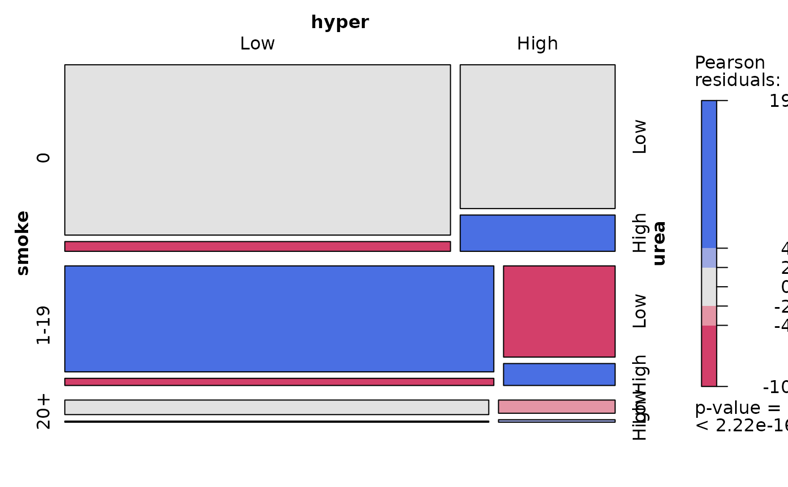
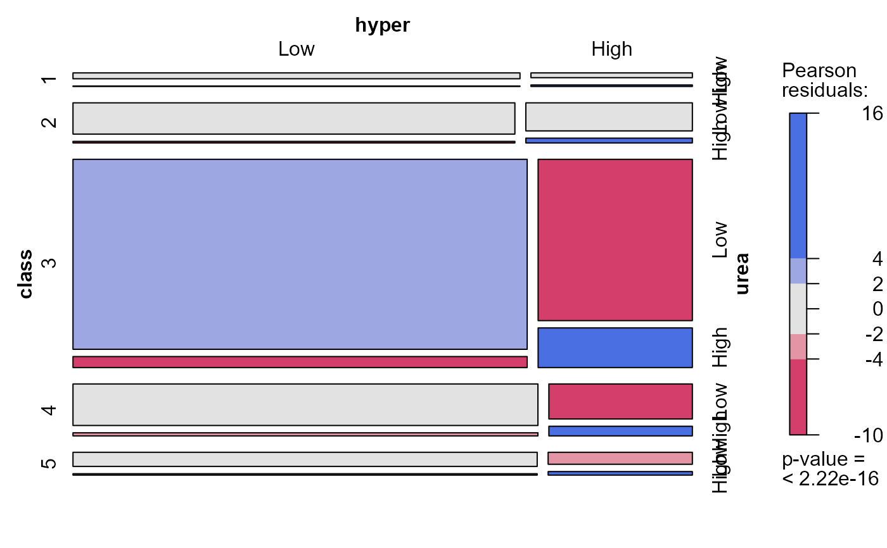
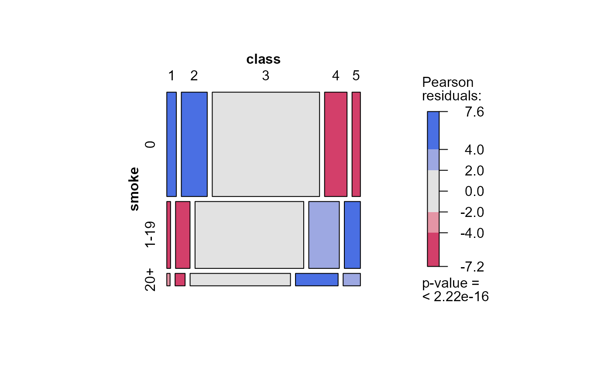
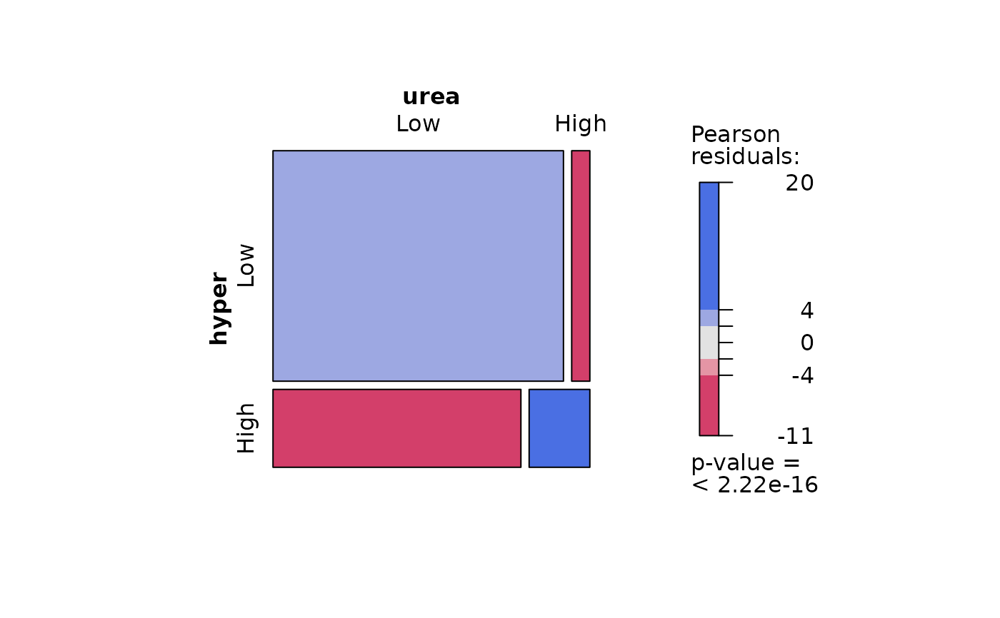

Toxaemia Symptoms in Pregnancy
Toxaemia.RdBrown et al (1983) gave these data on two signs of toxaemia, an abnormal condition during pregnancy characterized by high blood pressure (hypertension) and high levels of protein in the urine. If untreated, both the mother and baby are at risk of complications or death.
The data frame Toxaemia represents 13384 expectant
mothers in Bradford, England in their first pregnancy, who
were also classified according to social class and the number
of cigarettes smoked per day.
Usage
data(Toxaemia)Format
A data frame in frequency form representing a 5 x 3 x 2 x 2 contingency table, with 60 observations on the following 5 variables.
classSocial class of mother, a factor with levels
12345smokeCigarettes smoked per day during pregnancy, a factor with levels
01-1920+hyperHypertension level, a factor with levels
LowHighureaProtein urea level, a factor with levels
LowHighFreqfrequency in each cell, a numeric vector
Source
Brown, P. J., Stone, J. and Ord-Smith, C. (1983), Toxaemic signs during pregnancy. JRSS, Series C, Applied Statistics, 32, 69-72
References
Friendly, M. (2000), Visualizing Categorical Data, SAS Institute, Cary, NC, Example 7.15.
Friendly, M. and Meyer, D. (2016). Discrete Data Analysis with R: Visualization and Modeling Techniques for Categorical and Count Data. Boca Raton, FL: Chapman & Hall/CRC. http://ddar.datavis.ca. Example 10.10.
Examples
data(Toxaemia)
tox.tab <- xtabs(Freq ~ class + smoke + hyper + urea, Toxaemia)
ftable(tox.tab, row.vars=1)
#> smoke 0 1-19 20+
#> hyper Low High Low High Low High
#> urea Low High Low High Low High Low High Low High Low High
#> class
#> 1 286 21 82 28 71 5 24 5 13 0 3 1
#> 2 785 34 266 50 284 17 92 13 34 3 15 0
#> 3 3160 164 1101 278 2300 142 492 120 383 32 92 16
#> 4 656 52 213 63 649 46 129 35 163 12 40 7
#> 5 245 23 78 20 321 34 74 22 65 4 14 7
# symptoms by smoking
mosaic(~smoke + hyper + urea, data=tox.tab, shade=TRUE)

# symptoms by social class
mosaic(~class + hyper + urea, data=tox.tab, shade=TRUE)

# predictors
mosaic(~smoke + class, data=tox.tab, shade=TRUE)

# responses
mosaic(~hyper + urea, data=tox.tab, shade=TRUE)

# log odds ratios for urea and hypertension, by class and smoke
if (FALSE) { # \dontrun{
LOR <-loddsratio(aperm(tox.tab))
LOR
} # }